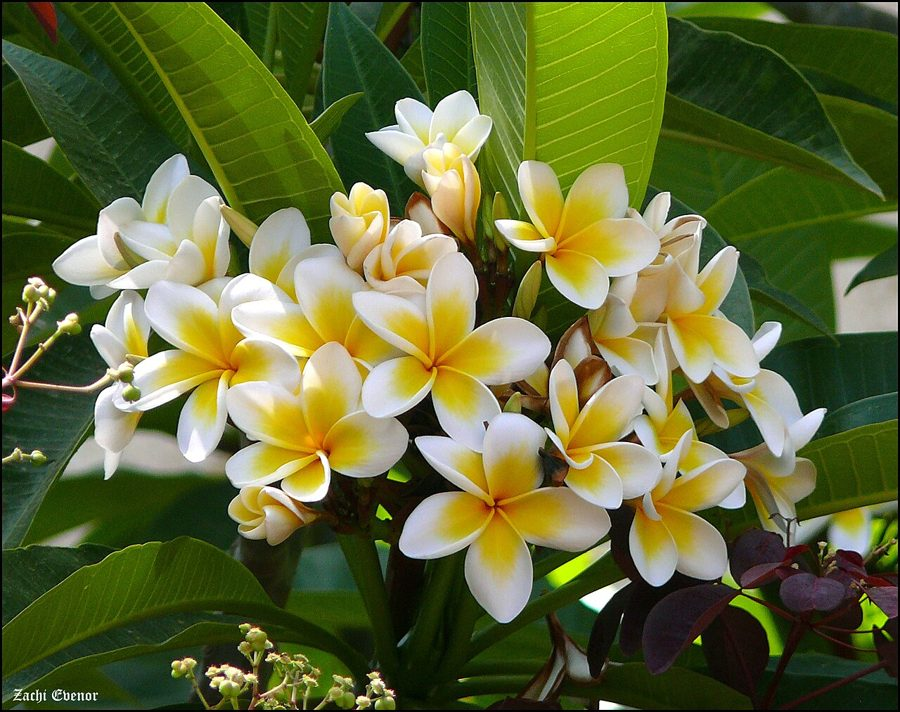

गुलचीनFrangipani
Plumeria rubra · Apocynaceae · FLR-0302

- Scientific name वैज्ञानिक नाम
- Plumeria rubra L.
- Family कुल
- Apocynaceae
- Hindi हिंदी
- गुलचीन
- Local names स्थानीय नाम
- gulchin, champa, golainchi, frangipani
- Status here यहाँ की स्थिति
- cultivated
- Movement आवागमन
- Resident, here all year
- Known from कहाँ दर्ज
- Others have published records from the wider Awadh–Purvanchal plain, none yet from Basti–Ayodhya अवध–पूर्वांचल से दूसरों के प्रकाशित अभिलेख, बस्ती–अयोध्या से अभी नहीं
- IUCN IUCN
- not evaluated
- Review समीक्षा
- audited and independently read
When to look कब देखें
Present all year. साल भर मौजूद।
Uses and possibilities उपयोग और संभावनाएँ
Drawn from the documented uses in the profile below, where each is labelled traditional, current or a research lead. All uses →
Tell it apart from इनसे अलग पहचानें
गुलचीन / Frangipani
Plumeria rubra L. — Apocynaceae
गुलचीन — एक छोटा, पर्णपाती वृक्ष या बड़ी झाड़ी जो मंदिरों, बाग़ों और घरों में लगाई जाती है। इसकी पत्तियाँ बड़ी, लंबी, चमकदार होती हैं। सबसे खूबसूरत वसंत के महीनों में आने वाले फूल होते हैं — गुलाबी, सफ़ेद और पीले रंग में, पाँच पंखुड़ियों वाले, गुच्छों में, अत्यंत खुशबूदार। मंदिरों में इन फूलों को पूजा में चढ़ाया जाता है। इसे "चंद्रिका", "देवकी" और अन्य नामों से भी जाना जाता है।
Quick Identification त्वरित पहचान
| Feature | Description |
|---|---|
| Size | Small deciduous tree or large shrub, 3–8 m tall |
| Leaves | Large, oblong-lanceolate, 20–40 cm, glossy, clustered at branch tips |
| Flowers | Highly fragrant, white with pink/red centre, five petals, 5–7 cm across |
| Flower colour | Variable: white with pink/red throat, or pink throughout |
| Flower arrangement | In clusters (cymes) at branch tips |
| Stem | Thick, succulent, pale greyish-green |
| The test | Large glossy leaves clustered at tips and highly fragrant flowers are distinctive |
Field tip: In temples and gardens, look for a small tree with large glossy leaves clustered at the branch tips and spectacular fragrant flowers with five thick petals, predominantly white with a pink or red centre. The heady fragrance is characteristic. In temples, flowers are often found as offerings.
हिंदी — कैसे पहचानें: बड़ी, चमकदार, लंबी पत्तियाँ शाखा के सिरों पर। सुगंधित फूल, सफ़ेद और गुलाबी-लाल रंग में। पाँच मोटी पंखुड़ियाँ। मंदिरों में मिलते हैं।
Morphology आकारिकी
Biometrics (cultivated trees, Indian temple gardens and homes):
| Measurement | Range |
|---|---|
| Height | 3–8 m |
| Trunk diameter | 10–30 cm |
| Leaf length | 20–40 cm |
| Leaf width | 5–10 cm |
| Flower diameter | 5–7 cm |
| Petal length | 3–5 cm |
Trunk and stem: Thick, succulent, pale greyish-green, becoming greyish-brown with age. Wood soft, containing milky latex (poisonous if ingested).
Leaves: Alternate but appearing clustered at the branch tips, large, oblong-lanceolate, 20–40 cm long, 5–10 cm wide. Margin entire. Glossy green above, paler beneath with prominent midvein. Petiole 1–2 cm. Deciduous; leaves fall November–December.
Flowers: Highly fragrant, white with deep pink or red centre, sometimes entirely pink. Five petals, each 3–5 cm long, thick and waxy. Flowers arranged in terminal cymes (clusters at branch tips). Flowering February to May, sometimes extending to June.
Fruit: Twin narrow follicles (seed pods), 15–20 cm long, narrow, containing numerous winged seeds. Rarely produced in cultivation.
हिंदी: पत्तियाँ बड़ी, चमकदार, लंबी, शाखा के सिरों पर। फूल सफ़ेद और गुलाबी-लाल, बहुत खुशबूदार। पाँच मोटी पंखुड़ियाँ। लेटेक्स जहरीली है।
Behaviour & Ecology व्यवहार और पारिस्थितिकी
Frangipani is a deciduous tree introduced from tropical Americas, widely cultivated in temples, gardens, and homes throughout India. It flowers before producing new leaves in spring, creating a spectacular display of fragrant flowers. The flowers are highly fragrant and attractive to pollinators. The tree is drought-hardy and tolerant of poor soils once established. Growth is slow to moderate. The tree coppices readily after cutting.
हिंदी: अमेरिका से लाया गया पेड़। मंदिरों और बाग़ों में लगाया जाता है। वसंत में खुशबूदार फूल। सूखे को सहन करता है।
Life Cycle / Phenology जीवन चक्र
| Month / season | Event |
|---|---|
| November–December | Leaf fall; dormancy |
| January–February | Dormancy continues; flower buds form |
| February–May | Flowering (before new leaves) |
| April–June | New leaves emerge; flowering subsides |
| July–October | Vegetative growth during and after monsoon |
| 4–6 years from seed | First flowering |
Seedlings germinate readily from winged seeds in monsoon. Growth is slow; trees take time to reach flowering size. Lifespan reaches 40–60 years in cultivation.
हिंदी: नवंबर-दिसंबर में पत्तियाँ गिरती हैं। फरवरी से मई तक फूल। अप्रैल तक नई पत्तियाँ।
Associated Species / Interactions संबंधित प्रजातियाँ
- Pollinator visitors: Bees and butterflies on flowers.
- Temple and spiritual significance: Often planted in sacred groves and temple gardens.
Pests and Diseases कीट और रोग
- Leaf-eating insects during monsoon; rarely serious.
- Scale insects may infest trees.
- Rust and fungal spots in humid conditions, but not severe.
- Root rot in waterlogged soils.
Agricultural / Human Relevance कृषि प्रासंगिकता
Traditional and cultural use:
- Sacred flowers. In Hindu tradition, Frangipani flowers are offered in temples and used in worship, particularly at dawn. The flowers are associated with temples and spiritual practices.
- Ornamental. Extensively planted in gardens, temple grounds, and homes for the spectacular, fragrant flowers.
- Fragrance. The flowers produce one of the world's most distinctive and pleasing floral fragrances, used in perfumery.
Caution: All parts contain a milky latex that is toxic if ingested. Skin contact may cause irritation in sensitive individuals.
Today. Frangipani is one of the most planted ornamental and temple plants in India.
हिंदी: पूजा के लिए मंदिरों में लगाया जाता है। फूलों की खुशबू बहुत प्रसिद्ध है। सभी भाग जहरीले हैं अगर खाए जाएँ।
Expected Locally स्थानीय रूप से अपेक्षित
Not a field record. Written from published accounts for eastern Uttar Pradesh. No confirmed local sighting yet — if you have seen it, that is what the atlas needs.
अभी तक स्थानीय पुष्टि नहीं। यह विवरण प्रकाशित स्रोतों से है, किसी अवलोकन से नहीं।
GBIF holds published records from urban and temple areas across Uttar Pradesh. Frangipani is found in temples, gardens, and homesteads throughout eastern Uttar Pradesh as a cultivated tree. Look for it particularly in temple grounds where the flowers are used for worship.
Distribution वितरण
Global range: Native to tropical Americas (Mexico and Central America). Cultivated in tropical and warm subtropical regions worldwide.
In India: Common in gardens, temples, and homesteads throughout the country, from sea level up to about 1,500 m elevation.
In Uttar Pradesh: Common in all districts, particularly in temples and large homes.
In Basti district / eastern UP: Present in temple grounds and large gardens; common in towns.
Research Questions शोध प्रश्न
- How many Frangipani trees are planted in your local temples, and what is their age? / आपके इलाके के मंदिरों में कितने गुलचीन के पेड़ हैं? — Survey temples; document locations and estimated ages.
- When does flowering peak in your area, and does it vary year to year? — Record flowering dates for 3–5 years.
- Which insects visit the flowers at different times of day? — Thirty-minute observations at flowering times.
- Do Frangipani trees grown from cuttings in gardens eventually produce seeds? — Track fruiting frequency on mature trees.
- What is the cultural significance of Frangipani in local temple worship? — Interview temple priests and worshippers about flower use in rituals.
Similar Species मिलती-जुलती प्रजातियाँ
| Species | How to tell apart | हिंदी | |
|---|---|---|---|
| [[kaner\ | Oleander]] (Nerium oleander) | Smaller, lanceolate, opposite leaves; flowers grow at branch ends; evergreen | पत्तियाँ छोटी, विपरीत; सदाबहार |
| Night Jasmine (Cestrum nocturnum) | Small leaves; white small flowers; black berries | छोटी पत्तियाँ; सफ़ेद छोटे फूल; काली बेरियाँ | |
| champa (Magnolia champaca) | Yellow flowers; different flower structure; evergreen | पीले फूल; विभिन्न संरचना |
Field rule: A small tree with large glossy leaves clustered at branch tips and magnificent fragrant five-petalled flowers (white with red/pink centre) is Frangipani.
Taxonomy & Classification वर्गीकरण
Original description. Originally described by Linnaeus in 1753 in Species Plantarum based on specimens from tropical America. Type locality is Mexico and Central America.
Subspecies. Monotypic — no subspecies are currently recognised, though cultivars and colour variants exist.
Family and order placement. Order Gentianales, family Apocynaceae (the dogbane family). The genus Plumeria contains about 8 species, mostly from the Americas, many grown as ornamentals.
Phylogenetic notes. Plumeria rubra belongs to a lineage of Apocynaceae characterised by fragrant flowers and milky latex, including oleander and periwinkle.
IUCN status rationale. Not evaluated. Widespread in cultivation; not threatened in native habitat.
Photo Gallery फोटो गैलरी
No photos yet — add field photos to media/species/frangipani/ and run node scripts/sync_photos.js.
Wanted photos:
- Small tree in temple or garden setting
- Large glossy leaves clustered at branch tips
- Flowers in various colour forms (white with pink, pink, etc.)
- Flowers in close-up showing fragrance (if possible)
- Flowers as temple offerings
- Mature tree in full bloom
References संदर्भ
- Linnaeus, C. (1753). Species Plantarum. Laurentius Salvius, Holmiae. Vol. 1.
- Hooker, J.D. (1882). The Flora of British India. Vol. 3. L. Reeve & Co., London.
- Duthie, J.F. (1903). Flora of the Upper Gangetic Plain and of the Adjacent Siwalik and Sub-Himalayan Tracts. Vol. 2. Government Printing, Calcutta.
- Kirtikar, K.R. & Basu, B.D. (1935). Indian Medicinal Plants. 2nd ed. Vol. 1. Lalit Mohan Basu, Allahabad.
- Sahni, K.C. (1998). The Book of Indian Trees. Oxford University Press, New Delhi.
- GBIF Occurrence Data — Plumeria rubra, India.
Source file: species/flora/trees/frangipani.md